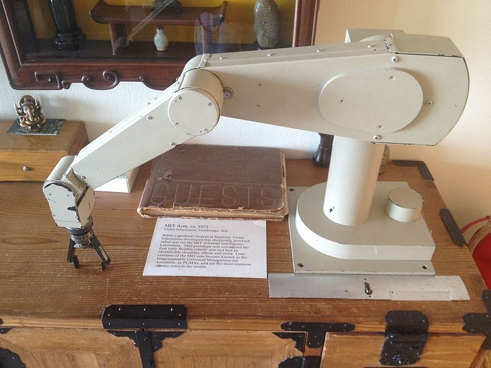
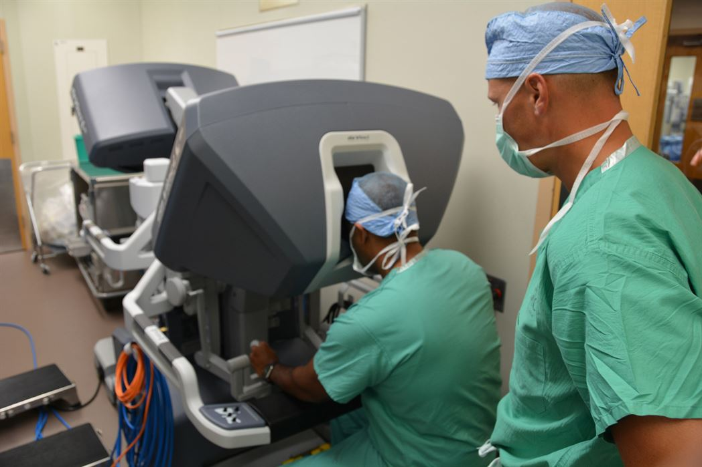

Največji dosežki robotike
Leta 1985 je robot po imenu Puma560 pomagal kirurgom pri možganski biopsiji, saj je robot zagotovil bistveno večjo natančnost in hitrejše okrevanje pacienta. Kmalu za tem so se vrstili številni drugi dosežki, kot so na primer operacija prostate robota v Londonu, ter na primer tudi priprava votline za menjavo kolka. Roboti se danes redno uporabljajo pri večjih in bolj težavnih operacijah.

